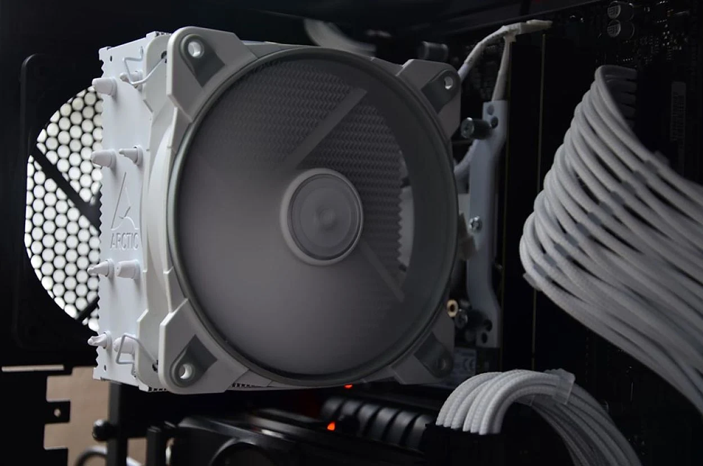

El disipador de la CPU un elemento o pieza cuya misión es extraer el calor que genera el procesador. Cuando hablamos de disipador, estamos refiriéndonos a un componente que utiliza un elemento activo (ventilador) o pasivo (aletas de aluminio) para extraer el calor a través del aire.
